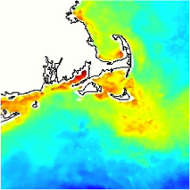
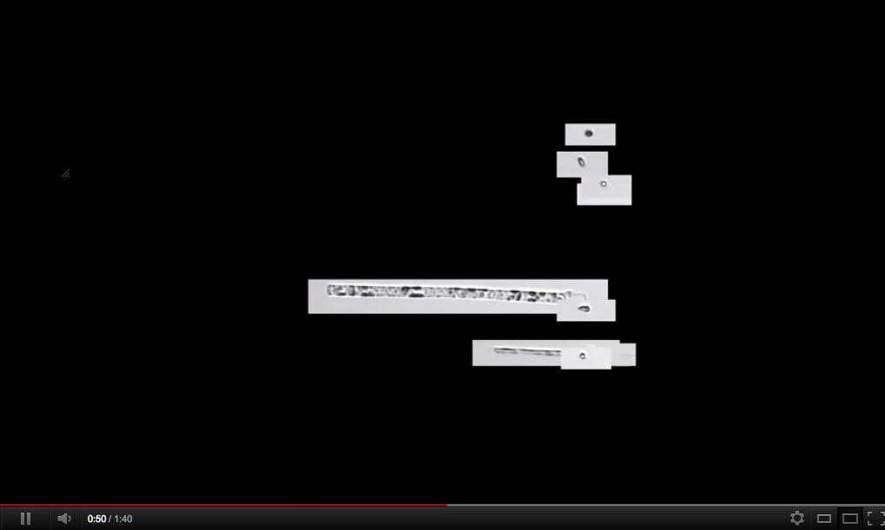
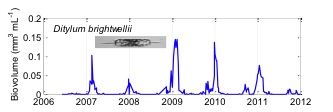

About Imaging FlowCytobot and its data dashboard

|
A drop of seawater contains hundreds, even thousands of tiny
phytoplankton, organisms so small they can only be seen with a
microscope. Like land plants, phytoplankton use energy from the sun to
photosynthesize and make new organic matter. And they use up carbon
dioxide and produce oxygen along the way. In fact, these single-celled
microbes produce half the oxygen we breathe every day.
|


|
At the Martha's Vineyard Coastal Observatory, IFCBs are working round
the clock in the ocean to capture high resolution images of tiny
plankton and relay them to shore. At the IFCB image web site, anyone
can access those images within minutes of collection. Plus browse
millions of images taken over the last 5 years.
|
|

|
Phytoplankton thrive under all kinds of conditions everywhere in the
ocean where even the tiniest amount of sunlight penetrates. They
manage this by being extremely diverse—they come in a huge range of
shapes and sizes and have evolved many intricate patterns of life. And
according to the scientists studying them at WHOI, that diversity is
so beautiful that everyone should be able to peek into the invisible
world of plankton.
|

|
Click here to see a replay of the phytoplankton and other particles
imaged in about a ¼ teaspoon of ocean water.
|

|
WHOI scientists are working to open access to images being produced by
a new invention, an automated underwater microscope called Imaging
FlowCytobot, or IFCB for short. Rob Olson and Heidi Sosik build IFCBs
from lasers, video cameras, microscope parts, and small
computers. IFCB can take more than 10 pictures every second as
phytoplankton and other small particles are speeding by the video
camera in a thin stream of seawater.
|

|
For scientists this time series of images provides a brand new way to
view the natural ebb and flow of phytoplankton communities as the
seasons change and years go by. This will help us understand the
processes that produce the oxygen we breath and support the ocean food
webs that include fish, whales, and seabirds. Long time series will
also show us how the invisible world of plankton adjusts to
environmental changes.
|